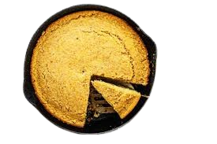

- 1 cup yellow cornmeal
- 1 cup all-purpose flour
- 2/3 cup sugar
- 3 1/2 tsp baking powder
- 1 tsp salt
- 1 cup milk
- 1 large egg
- 1/3 cup unsalted butter, melted
-
- Preheat oven to 400°F (200°C).
- Grease a 9-inch round cake pan or baking dish.
- In a large bowl, whisk together cornmeal, flour, sugar, baking powder, and salt.
- Make a well in the center and add milk, egg, and melted butter.
- For extra flavor, add a handful of shredded cheese or a pinch of chili flakes if desired.
-
- Stir just until combined; do not overmix. Batter will be slightly lumpy.
- Pour batter into prepared pan and smooth the top.
- Bake for 20–25 minutes or until golden and a toothpick comes out clean.
-
- Let cool for 10–15 minutes before slicing for best texture.
- Serve warm with butter and honey if you like.
- Enjoy your homemade cornbread fresh from the oven!